iPhone 與 iOS
StarFly 目前要求 iOS 26 或更新版本。請使用實體 iPhone，準備好解鎖密碼。
從未簽署 IPA、Sideloadly，到 iPhone 開發者信任與 LocalDevVPN 連線設定，一步一步完成。
Apple ID 是 Sideloadly 簽署 App 用的帳號；StarFly Pro 授權碼是 Pro 版啟用用的另一組資料。免費版不需要購買 Pro 授權。不要把 Apple ID 密碼、驗證碼或完整授權碼貼到公開社群。
符合條件再開始，可以減少 Sideloadly 找不到手機或安裝後無法開啟的狀況。
StarFly 目前要求 iOS 26 或更新版本。請使用實體 iPhone，準備好解鎖密碼。
使用可傳輸資料的 USB 線。第一次連接時，iPhone 可能詢問是否信任這部電腦。
免費版與 Pro 安裝檔都可直接下載；Pro 啟用需要另外購買授權碼。
下載免費版 下載 Pro IPA 所有 IPA 都需要先由 Sideloadly 簽署。由 Sideloadly 使用你的帳號簽署。免費 Apple ID 簽署通常每 7 天需更新；這與 Pro 授權是兩回事。
以下步驟依 Windows 版 Sideloadly 編排；不同版本的按鈕位置可能略有差異。
從 Sideloadly 官方網站下載並安裝 Windows 版工具。免費版與 Pro IPA 都可由官網下載。Pro 需另購啟用授權碼，請由官網上的官方 LINE 洽購。
下載免費版 IPA 下載 Pro IPA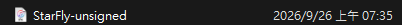
保持 iPhone 解鎖並連接電腦。如果手機出現「信任此電腦」，確認是自己的電腦後點「信任」，再輸入 iPhone 密碼。回到 Sideloadly，確認上方裝置欄選到你的 iPhone。
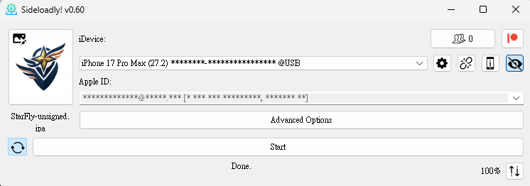
Sideloadly 官方說明：免費帳號簽署的 App 通常可使用 7 天。可在 Sideloadly 設定自動重新簽署；自動刷新仍需要電腦能透過 USB 或已設定的 Wi‑Fi 偵測到裝置。若 App 失效，使用相同 Apple ID 重新安裝最新版。
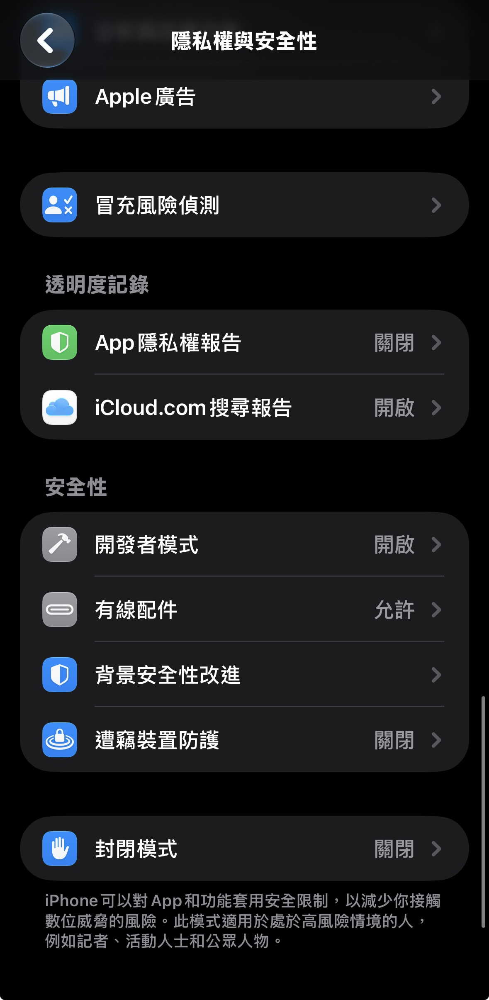
若跳出「未受信任的開發者」，先取消提示，再到設定中信任剛才用來簽署的開發者。
不要重複點開 App；返回 iPhone 主畫面。
「設定 → 一般 → VPN 與裝置管理」。
在「開發者 App」區域，點選這次 Sideloadly 簽署所使用的開發者帳號。
按「信任……」並在確認視窗再次允許。完成後回主畫面開啟 StarFly。
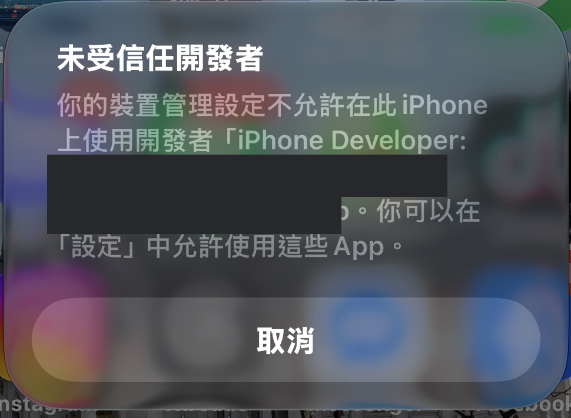
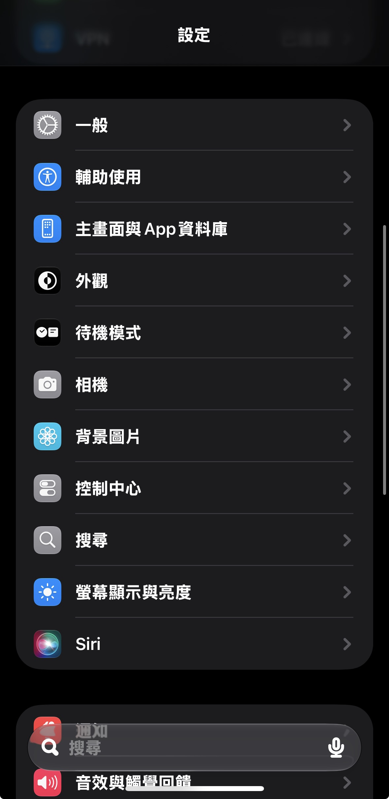
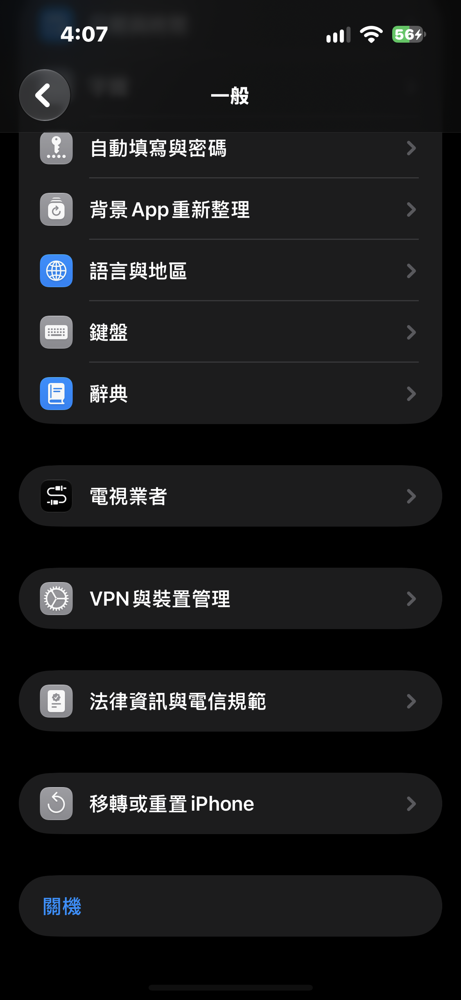
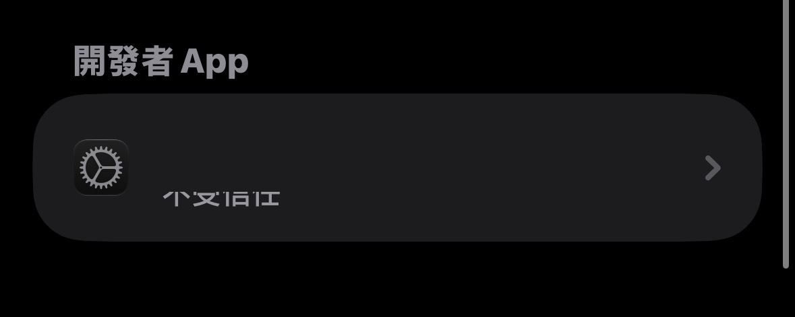
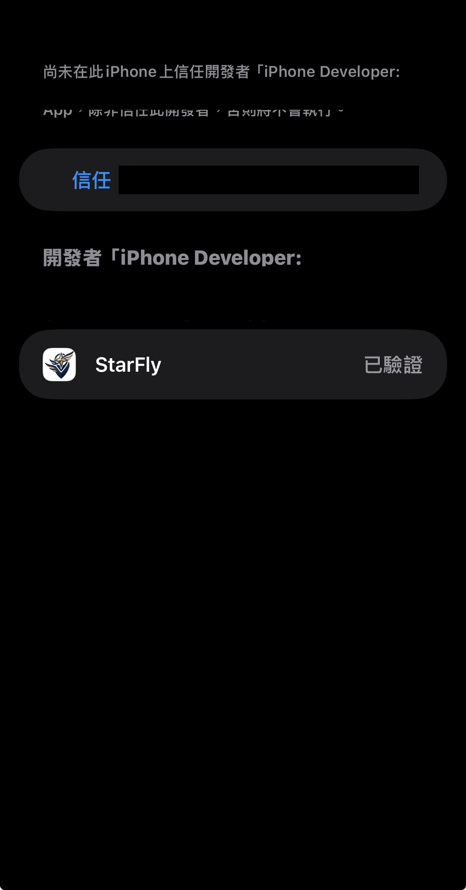
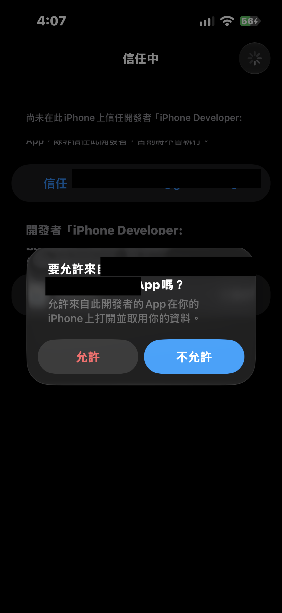
免費版可直接進入 App。StarFly Pro 首次開啟時，請輸入 Pro 授權碼並啟用此設備；授權碼與 Apple ID 不同，也不會由 Sideloadly 產生。
查看官網授權碼購買資訊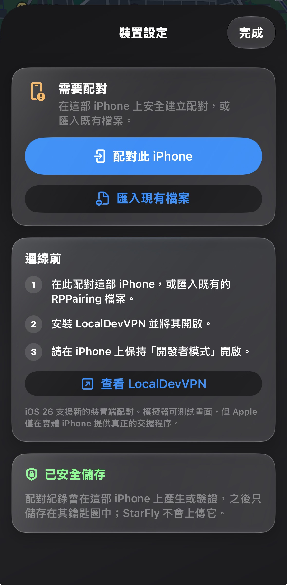
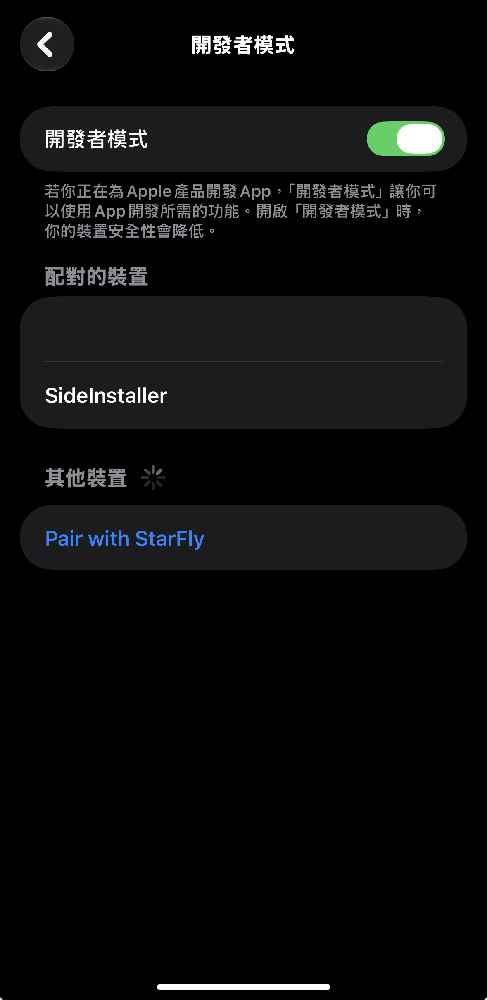
StarFly 透過 LocalDevVPN 在你的 iPhone 上建立本機連線通道；它不是用來替代一般上網 VPN 的服務。
由 App Store 安裝，確認開發者與 App 名稱正確。
在 App Store 查看 LocalDevVPN ↗ App Store 官方連結 · 免費下載（以商店頁面為準）第一次連線時，iOS 可能詢問是否允許新增 VPN 設定；確認這是你剛從 App Store 安裝的 LocalDevVPN，再依系統提示操作。
回到 LocalDevVPN，啟動它的連線並確認狀態為已連線。開始 StarFly 位置工作階段期間，保持通道啟用。
如果 StarFly 顯示「仍在連線」，先確認 LocalDevVPN 已連線，再點「再試一次」。Wi‑Fi 使用者不要誤選行動數據流程。
這個 iCloud 捷徑叫「StarFly 網路流程」。它配合 StarFly 的行動數據連線引導，在需要時切換行動數據關閉／重新開啟，接著返回 App 繼續連線。
取得 StarFly 網路流程捷徑 ↗按「取得捷徑／加入捷徑」，並在「捷徑」App 確認已加入，名稱保持「StarFly 網路流程」。
回 StarFly，開啟「控制中心 → 捷徑流程」，輸入完全相同的名稱，再開啟「需要時自動執行捷徑」。
StarFly 需要暫時關閉行動數據時，捷徑會處理關閉；連線準備完成後，再執行開啟行動數據的捷徑。iOS 會返回 StarFly 繼續偵測。
按下方問題展開排查方法；求助時請遮住 Apple ID、驗證碼與授權序號。
解鎖 iPhone、重新插拔資料線，並在手機端允許「信任此電腦」。確認電腦已安裝 Sideloadly 官方要求的 Apple 裝置元件；重新啟動 Sideloadly 和電腦後再試。不要下載不明的驅動程式。
先取消提示，再到「設定 → 一般 → VPN 與裝置管理 → 開發者 App」，選取你剛才在 Sideloadly 使用的開發者並按「信任」。信任前先確認 IPA 來源和開發者身分。
免費 Apple ID 的簽署效期通常為 7 天，且同時可側載的 App 數量有限。用同一個 Apple ID 重新側載最新版 IPA，或事先在 Sideloadly 啟用自動刷新並確保電腦能偵測 iPhone。更新時不要先刪除舊 App，否則可能清掉本機設定並需要重新配對。
不可以。Apple ID 只供 Sideloadly 簽署；Pro 授權碼是另一項裝置授權。免費版不需要購買 Pro 授權。請透過官方 LINE @689whbkl 洽詢 Pro 方案。不要在公開頁面張貼完整授權碼。
確認配對的是目前這部實體 iPhone，允許 StarFly 使用本機網路，並確認 LocalDevVPN 通道仍開啟。Wi‑Fi 請使用 Wi‑Fi 連線流程；只有真的在使用 4G／5G 時才選行動數據流程。前往 StarFly「設定 → 連線診斷」可查看狀態。
使用相同 Apple ID 安裝相同 StarFly App 的新版 IPA，通常可覆蓋更新並保留 App 資料。不要先刪除 App；若要換簽署帳號或遇到簽章錯誤，先洽官方 LINE 確認再處理。
傳送「卡住的步驟編號＋錯誤畫面」即可；請先遮住 Apple ID、驗證碼、授權序號與配對碼。